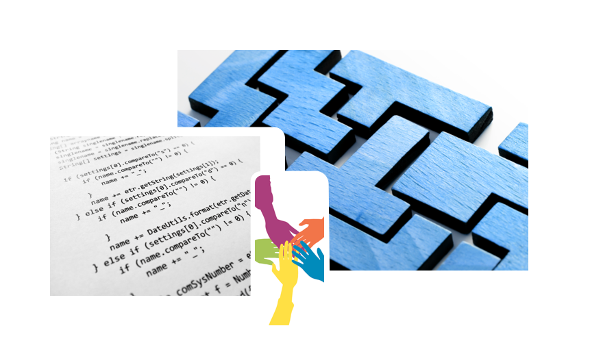

creating
intrinsic value
intrinsic value
delivering
certainty
certainty
producing
tangible results
tangible results
collaborative
work style
work style
experience
our commitment
our commitment
efficiency
through consistency
through consistency
We provide high-quality professional services in software engineering and information technology to facilitate the success of our clients' projects, applications, processes and infrastructure.
company
We are a professional services company with the collective capacity of its people to create intrinsic value, by executing business tasks - better, faster, more often and more productively. We combine a careful blend of technical finesse, close communication and real- world common sense to help some incredibly cool and innovative companies build the most dynamic yet robust software applications, products and systems.
We encourage our people to partner with our clients to serve them at every level, and maximize the success by facilitating teamwork and collaboration. Our perspective begins at eye level - with a clear understanding of our clients' software and information technology project objectives, methodologies, deliverables and challenges.
Our responsibility to our clients is delivering value-added professional services using our hands-on approach and relentless focus on execution and tangible results. And, many of our new engagements come from existing clients - a testament to our ability to consistently deliver results.

work


Implemented critical and high priority Information Security and Fraud Prevention projects for centralized database that serves data to over 1,600 applications and stores information for over 400 million users worldwide. Reviewed and validated over 1,600 applications for security compliance.
Responsible for designing the batch load strategy required to upload data in a batch and scheduled fashion into Oracle EBS. Configured and developed Interfaces, Procedures, Models using Oracle Data Integrator for E-LT uploads of data from file into Oracle EBS for various batch interfaces.
Developed resource capacity planning tool to provide visibility into resource allocation and availability and drive process improvement for source control strategy for multiple concurrent development projects for Cocoa Framework team.
Project Management services for web based application that integrates with various other enterprise systems using SMTP, HTTP, SOAP and LDAP and manages user authorization and provisioning either automatically or manually using complex approval or workflow engines.
Build a tool using SQL, PL/SQL to help the DBA team efficiently manage the increasing number of mission critical databases and which will not only propagate the same changes across a large number of databases quickly, but also reduce possibilities of mistakes, all while making it easy for others to monitor database change activity.
Development of send and receive request for provisioning system that sends set of identifiers to the manufacturing system and receives acknowledgement once a unique identifier is allocated for all manufactured devices in a Java, JBoss, JProfiler, Hibernate environment.
Designed and implemented an Automated Email Verify and Monitor framework to verify that generated email meets specific conditions in order to ensure proper operation of mail generation and delivery process using Java, JBoss, XML, Oracle technologies.
In the Digital Signature Luna Devices Refresh Project, the client was highly concerned about the roll out of the project as the major revenue security device was getting upgraded. The project was rolled out on time and not a single issue was reported even after 3 months after the roll out.
Built reporting module around existing Generic Mail Service to derive Hourly, Daily, Monthly and Yearly statistics on emails sent, opened counts, undelivered emails etc which was very much needed by business for analytics.
Designed and developed an online mortgage application using Spring Framework, JAXB, JMS, JSTL which facilitates the completion of loan application by guiding the applicants through the loan process from submittal to the approval of a loan.
Provided project management for Web App Support project which created a set of libraries, tools, and/or services to make it easier for software development teams to build web applications and re-use transactions across multiple platforms.
Web security assessment to find vulnerabilities like SQL/XSS and other injection flaws, CSRF, information disclosure and improper error handling, broken authentication/authorization, insecure communication, malicious file execution, privilege escalation on web applications.
Improvements to look and feel of enterprise application system used for generating internal and external communications based on user feedback and in collaboration with in-house UX/UI designers. Implemented redesign of various features, modal windows, customization of jQuery lightbox plugins.
Initiated and built front end code libraries with visual effects and functionalities using HTML, JavaScript and CSS in a highly agile environment to build mission critical J2EE based web applications for provisioning and configuration management for revenue driven consumer products, tightly coupled with core worldwide manufacturing processes.
Responsible for design, architecture, implementation and testing of iPhone, iPad application on iOS platforms for a mail promotion system that sends out millions of email messages worldwide.
Introduced and established Autosys workload automation management tools in large infrastructure and installed/configured/documented Autosys R11.3 with failover process using Oracle 10g.
Full black box penetration testing of one of external class C network that included network security assessment to find vulnerabilities on the network, server software layer and find other sensitive information that is publicly available on Internet about the target.
Enhanced existing online banking application to re-structure the checking and saving product lines, which involves re-packaging the products lines, change the product availability among various states within the U.S, as well as re-structure the banking fees using Spring, MVC, JSTL technologies.
Project involved authoring JavaScript and employing jQuery library to implement more complex functionality such as in fading and timed mouseovers, accordions and sliding divs to create a easy to use, intuitive system that boasts a clean and consistent visual interface with logical screen progression and interactive elements for a self-service, intranet application to request, update, remove and manage user accounts.
Created over 300 SSL certificates for Retail ACL Management project designed to consolidate the access lists (ACLs) to increase security and reduce complexity for applications subject to PCI and SOX compliance in preparation for migrating to a stateful firewall.
Primary responsibility was to investigate and audit the current state of the Apropos system. Analyzed the 83 servers that are currently part of the Apropos system to capture all the relevant information and configuration on each of those servers and proposed solution on how to correct those issues in order to increase the resiliency, security and performance of the entire Apropos system.
Designed and developed a complete search framework from scratch with filters that can parse both email body as well as different type of attachments and evaluate each email against the search criteria, with any matching emails get copied to a specific location for security admin to review them.
Improved an account migration tool to balance the Oracle 10g, 11g database load and improve performance of deletes, apart from providing training for performance tuning and troubleshooting performance issues.
The scope of In Product Licensing project was to understand the capacity of existing hardware and tune the J2EE parameters from application software stack to understand the peak load supported by the system. Entire WebLogic setup was done and the project met the guaranteed capacity and response time with 30 % resource utilization.
Creation of a web portal for monitoring application infrastructure using Storm, Hadoop Map
Reduce jobs that provides support team an integrated view of the system, allowing them to pre-
empt any serious errors, minimize downtime and optimize performance.
Maintained in real-time a centralized enterprise-wide data based repository to identify ownership
of applications and systems, as well as their network details including IP addresses, hosts,
devices, ports, escalation paths, etc.
Configure and automate Rsyslog/syslog-ng/Splunk universal forwarder to transport application
logs securely (TCP/TLS) to a remote server used for monitoring fraudulent activities.
Create content for distribution across multiple channels and organizational change management
(OCM), user experience and in-house communications including video scripts, technical writing,
documentation and validation.
Management and execution of a global data migration for over 75 large-scale, business-critical
P0 and P1 applications as well as feature and release management for the Mobile Services and
Asset Management Systems teams.
Lead a pilot program to leverage Big Data capabilities to strengthen PCI-DSS compliance and
reporting across company-wide network, bringing on new internal organizations one-by-one to
demonstrate and deliver value-add.
Perform network vulnerability assessments and lead entire Web Applications Security Program,
including managing ongoing scanning and testing of external web applications.
Develop frameworks and applications under Hadoop umbrella using Map Reduce, Oozie, Pig,
Weka and handle aggregation of large volume data sets in range of Petabytes.
Security logging analytics and log onboarding to Splunk and ArcSight via syslog-ng for
PCI/PII/SOX compliant applications including resolution of vulnerabilities and delivery issues.
Migrate users of Entrust SSL certificates to an internally developed system that issued certificates
using existing certificate authority infrastructure realizing in significant cost savings of more than
$750,000 and increased the flexibility of certificate management.
Led a high-profile implementation and rollout of a service life-cycle management platform
including a wizard-based application on-boarding tool to centralize and automate how business
functionalities are exposed and built by various business groups.
Architect a hybrid public/private cloud platform (IaaS, PaaS & SaaS) across Amazon Web
Services, Terremark, HP Cloud Services, DataPipe, Google Compute Engine, CloudStack and
Rackspace, and implement a new Cloud Management Platform from CloudSwitch, CloudStack,
OpenStack, RightScale, ScaleXtreme and VMware vCloud Automation Suite.

services
enterprise application development
Software has become critical to advancement in almost all areas of human endeavor and today's software applications are far more complex; typically have graphical user interface and client-server architecture.
From smart customization of pre-developed cross-platform standalone and client-server business applications to full-cycle development of feature-rich web applications along our client's vision, we are uniquely positioned to deliver cost effective and reliable software solutions.
Our expertise comprises a comprehensive set of open-source and proprietary technologies that allows us to execute the most challenging and complex projects and satisfy our client's requirements, preferences and expectations.
- Rational Rose, Together, NetBeans, ArgoUML, MS Visio, StarUML
- ER Studio, MySQL Workbench, Oracle SQL Developer, Toad
- Agile, DSDM, Scrum, Kanban, RUP, XP
- Java, C, C++, Objective-C, Swift, SQL, PL/SQL, PHP, Perl, Python
- J2EE, JSP, JMS, Spring, Struts, Hibernate, JPA, JSF, EJB, Java Security, Velocity, JMF, Apache, JXL, JAccess, Oracle Portal
- WSDL, REST, SOAP, Apache Axis, JAXB, JAX-WS
- XHTML, XML, XSL, XSLT, XPath, XQuery, SAX, DOM, Stax, OAuth, OmniAuth, JSON
- HTML5, CSS, jQuery, Angular.JS, Node.js, Backbone.js, Ext JS, Bootstrap, YUI, SASS, LESS, Highcharts
- Adobe CC, InDesign, Photoshop, Illustrator, Dreamweaver, Sketch, CorelDraw
- iPhone SDK, Android SDK, Cocoa Touch, PhoneGap, jQuery Mobile, J2ME, XMPP, SMS, WAP
- Eclipse, Intellij IDEA, NetBeans, XCode, Komodo
- SVN, CVS, Rational ClearCase, Git/GitHub
- Maven, Ant, Gradle
- TCP/IP, HTTP/HTTPS, SMPP, MMS, MD5, POP3, SMTP, FTP, TFTP
- MySQL, Oracle, MongoDB, MS SQL Server, PostgreSQL, FileMaker, Lucene/SOLR, LDAP
- Apache Tomcat, JBoss AS, Jetty, Oracle AS, WebLogic, Windows Server IIS, Nginx, NetWeaver
- Jenkins, Bamboo, Hudson
- Amazon Web Services
project management & analysis
The management of software development is heavily dependent on four factors: People, Product, Process, and Project and in the Order of Dependency, the people factor ranks number one.
Software development being a people centric activity requires good, competent project managers, and the manager selection is most crucial and critical.
We provide mature and quality project management services focusing on vital elements like project communication, requirements gathering, knowledge transfer and change and risk management and reporting.
- Technical Project Management
- PMO, PMBOK, PMP
- Manager (Applications, Development)
- Manager (Database, Networking)
- Manager (Security, UX, QA)
- Project Initiation & Planning
- Project Execution & Control
- Project Closure
- Project Charter
- Risk Identification & Assessment
- Risk mitigation
- Work Breakdown Structure
- Resource & budget estimation
- MS Project, OmniPlan, Gantt Chart
- Business Analysis
- Requirement gathering
- Functional Specification Document
- Business Requirement Document
- Stakeholder Maps
- System Documentation
technology infrastructure services
Sound infrastructure is a fundamental requirement for delivering the applications which make business efficient, competitive and adaptable. With that in mind, we offer range of services to clients endeavoring to advance the capabilities of their existing secure, 24x7, high available information technology infrastructure and services.
Our services areas cover Middleware and Web Services Engineering; Network Engineering, Operations and Support; Server and Storage Engineering, and Desktop Services.
Robust security is a must to protect vital data and minimize risk, as new threats emerge all the time. We respond with security services including information security management, intrusion detection and protection, penetration testing management and support.
- Authentication, Authorization
- Access Control, LDAP
- Centralized Server, Disk Storage
- Network Backup
- LAN/WAN Configuration/Support
- Firewall Configuration/Support
- Load balancers
- Directory Services
- Identity Management
- Solaris, Linux, Windows OS
- WebLogic, WebSphere, JBoss
- Tomcat, Apache, IIS
- EMC, Hitachi, Brocade
- Cisco, Foundry, Juniper
- Citrix/Netscalar
- Cryptography
- Vulnerability Assessment
- NOC/Technical Support
quality assurance &
testing As robustness, reliability and stability are becoming increasingly important for the success of any software application or product, Quality Assurance & Testing has become an integral part of SDLC. Developing bug free code is a major challenge for the software industry and the cost of identifying and fixing bugs post deployment is much higher than if done during the development phase. We fully comprehend the dynamics involved and offer quality assurance and testing services integrated with software development for greater efficiency, reliability and cost reduction.
testing As robustness, reliability and stability are becoming increasingly important for the success of any software application or product, Quality Assurance & Testing has become an integral part of SDLC. Developing bug free code is a major challenge for the software industry and the cost of identifying and fixing bugs post deployment is much higher than if done during the development phase. We fully comprehend the dynamics involved and offer quality assurance and testing services integrated with software development for greater efficiency, reliability and cost reduction.
- Unit tests, Mocking tests
- Performance tests
- Integration test
- Browser testing
- Behavior driven testing
- Data integrity testing
- Functional testing
- Acceptance testing
- Database testing
- Sanity testing
- Load testing
- Regression testing
- Code review
- Test Case Design
- Test Plan & Scripts
- Test Automation
- Quality Metrics
- Black /Gray/White Box Testing
- Build acceptance
- Bug tracking & reporting
- Junit, Mockito, Selenium, JMeter, TestNG, JBehave, TestComplete, EasyMock, TCMS, HP Quality Center
- JIRA, Bugzilla, Trac, HP ALM/Quality Center, Rational ClearQuest, Rally, Remedy, Request Tracker
database development & administration
Database technology is an integral part of success of just about any software or web application development support, and holds prominence in today's environment where emerging technology such as Cloud gain importance and acceptance.
Our suite of services includes proactive assessment of databases, designing and architecting new database systems, performance tuning and seamlessly maintaining production systems.
We work alongside our clients to deliver reliable, scalable, high-performing database systems to support their most valuable asset, "data".
- Planning & Design
- Architecture & Integration
- Custom database development
- Performance Tuning
- Data replication
- Clustering
- Migration
- Database Installation
- Patches, Upgrades & Refreshes
- Oracle Applications Patching & Cloning
- Capacity Planning
- Database Security Management
- Backup & Recovery Solutions
- RMAN
user interaction & user experience
"User-Friendly" is today's buzzword, and as software and web applications become progressively more complex it is even more critical to provide users with a rich, interactive experience.
Realizing design of intuitive user interface is one of the most powerful tools in the quest for providing great user experience; we offer complete user-centric UI/UX services.
We promote simple yet efficient, high-quality pixel perfect user interaction experience to improve usability of web applications across a vast landscape of browsers, personal computers, and mobile devices.
- User Surveys, User Flows
- Research strategy
- Usability studies, interviews, surveys
- Heuristic reviews
- Personas, empathy maps
- Interaction modeling
- Storyboards, Wireframes
- User Interfaces
- Navigation & search schemas
- Taxonomies
- Style Guides
- Typography, Iconography
- Accessibility
- Content mapping
- Copy-editing
- Prototypes


contact
aumkaara has built a reputation for straight
talk, customer-focus, excellent service,
professionalism and quality work.
We have an uncompromising commitment
to customer service and promise highest
integrity in all our dealings with clients and
our people.
We think and act with a sense of urgency
and take ethical responsibility of our work
and deliverables.
We are easy to work with and strive to
create lasting intrinsic value in our business
engagements by virtue of our fair and
consistent business practices.
For busines inquiries,
info@aumkaarainc.com For job inquires
jobs@aumkaarainc.com current job openings
info@aumkaarainc.com For job inquires
jobs@aumkaarainc.com current job openings